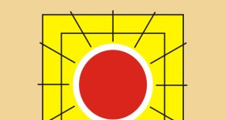
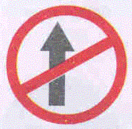

पास होने के लिए 20 में से 12 (60%) अंक चाहिए। 12 सही होते ही आप तुरंत पास हो जाएंगे!
तेलंगाना RTA लर्नर लाइसेंस (LLR) हिन्दी प्रैक्टिस और मॉक टेस्ट
हैदराबाद और तेलंगाना RTA लर्नर लाइसेंस (LLR) कंप्यूटर परीक्षा (STALL) के लिए 412 आधिकारिक प्रश्नों के साथ हिन्दी में मुफ्त मॉक टेस्ट, सड़क संकेत और RTO गाइड।
परीक्षा से पहले 10 सुनहरे नियम (Golden Rules)
गोला = अनिवार्य आदेश (लाल बॉर्डर = निषेध, नीला = अवश्य करें)। त्रिकोण = चेतावनी। आयत = जानकारी।
जेब्रा क्रॉसिंग पर पैदल यात्रियों को हमेशा पहला अधिकार (Right of Way) होता है।
ओवरटेकिंग हमेशा दाईं ओर से ही की जानी चाहिए। केवल तभी बाईं ओर से कर सकते हैं जब आगे वाला वाहन दाईं ओर मुड़ने का संकेत दे रहा हो।
पहाड़ी ढलानों पर ऊपर चढ़ने वाले वाहनों को नीचे उतरने वाले वाहनों पर प्राथमिकता होती है।
आपातकालीन नंबर: पुलिस = 100, एम्बुलेंस = 108, फायर = 101।
लर्नर लाइसेंस (LLR) 6 महीने (180 दिन) के लिए वैध होता है। 30 दिन बाद पक्के लाइसेंस के लिए आवेदन कर सकते हैं।
सफेद छड़ी लेकर चलने वाला व्यक्ति दृष्टिहीन (नेत्रहीन) होता है।
सड़क पर लगातार पीली/सफेद लाइन को ओवरटेक या यू-टर्न के लिए पार नहीं कर सकते।
पीली (एम्बर) बत्ती: स्टॉप लाइन से पहले रुकें, जब तक कि अचानक रुकने से दुर्घटना का खतरा न हो।
प्रमुख सड़क संकेत (उदाहरण)
 सफेद स्टॉप लाइन के पीछे पूरी तरह रुकना आवश्यक है
सफेद स्टॉप लाइन के पीछे पूरी तरह रुकना आवश्यक है
 धीमे करें और सावधानी से आगे बढ़ें
धीमे करें और सावधानी से आगे बढ़ें
 रुकें, यातायात देखें और सावधानी से आगे बढ़ें
रुकें, यातायात देखें और सावधानी से आगे बढ़ें

अनिवार्य संकेत चेतावनी संकेत
चेतावनी संकेत
 सूचनात्मक संकेत
सूचनात्मक संकेत
 रुकें
रुकें
 रास्ता दें
रास्ता दें

BLOW YOUR हॉर्न AND गाड़ी चलाएं CONTINUE TO THE END OF THE सड़क एकतरफा रास्ता (वन वे)
एकतरफा रास्ता (वन वे)
 प्रवेश निषेध
प्रवेश निषेध
 वाहन निषेध IN BOTH DIRECTION
वाहन निषेध IN BOTH DIRECTION
हैदराबाद आरटीओ परीक्षा केंद्र
आरटीओ सेंट्रल (खैरताबाद)
ईनाडु कार्यालय के सामने, सोमाजीगुडा, खैरताबाद, हैदराबाद - 500082
आरटीओ नॉर्थ (सिकंदराबाद / तिरुमलघरी)
तिरुमलघरी चौराहे के पास, लाल बाजार, सिकंदराबाद - 500015
आरटीओ रंगारेड्डी / साइबराबाद (कोंडापुर)
बॉटनिकल गार्डन के पास, ड्राइविंग ट्रैक के सामने, कोंडापुर, हैदराबाद - 500084
आरटीओ ईस्ट / मेडचल (उप्पल)
सर्वे ऑफ इंडिया के पास, इनर रिंग रोड, उप्पल, हैदराबाद - 500039
आरटीओ वेस्ट (टोलीचौकी / मेहदीपटनम)
रेथीबोवली चौराहा, मेहदीपटनम, हैदराबाद - 500028
आरटीओ ईस्ट (मलकपेट)
ओल्ड मलकपेट, टीवी टावर के पास, मूसा रामबाग, हैदराबाद - 500036